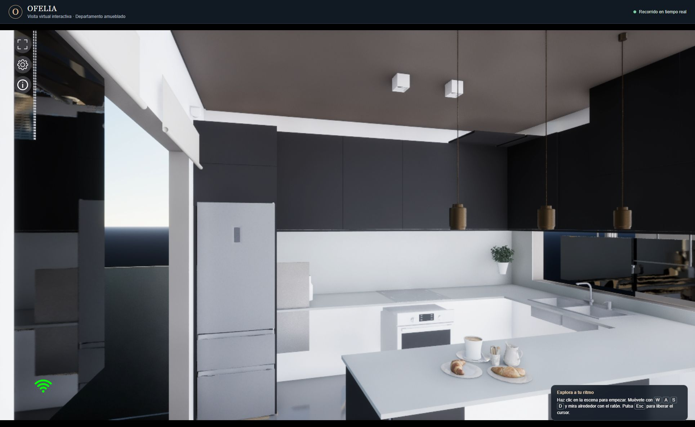
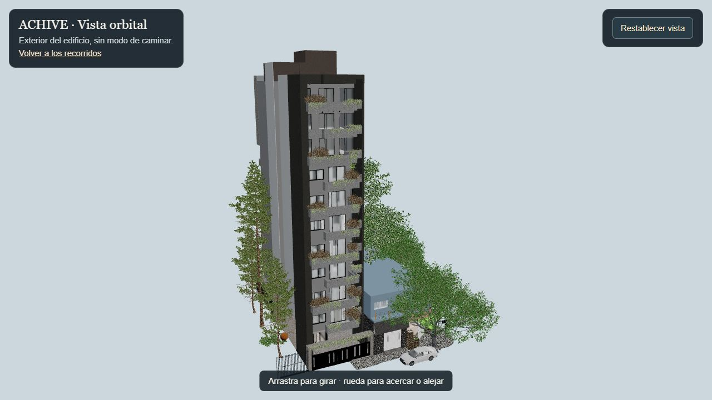

Departamento amueblado
Camina por el living y la cocina en tu navegador. Usa WASD y arrastra el ratón para mirar.
Entrar al interiorRecorridos 3D interactivos

Camina por el living y la cocina en tu navegador. Usa WASD y arrastra el ratón para mirar.
Entrar al interior